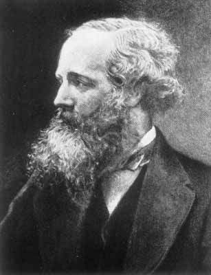

E-Mag, or Maxwell's Paradise
Electromagnetism
Electomagnetism is the bread and butter of physics. It is the force we understand the best and therefore can control
the best. I have here appended some of my thoughts on various parts of the subject mainly because I find them
interesting. (I will happily accept errata).
RLC Circuits
Cherenkov Radiation (under construction - comments are welcome!)
Magnetic Monopoles
Interesting Readings:
Kicking out Kirchoff's Laws
Notables:
Ampère, André-Marie
Biot, Jean-Baptiste
de Coulomb, Charles Augustin
Dirac, P.A.M.
Einstein, Albert
Faraday, Michael
Feynman, R.P.
Fresnel, Augustin
Gauss, Johann Carl Friedrich
Helmholtz, Hermann
Jackson, J.D.
Kirchoff, Gustav
Larmor, Joseph
Lenz, Heinrich
Lorentz, Hendrik Antoon
Maxwell, James Clerk
Millikan
Oersted
Ohm
Purcell, Edward M.
Savart, Felix
Snell, Willebrord van Roijen
Stokes, George
Tesla, Nickola
Volta, Alessandro
Wheatstone, Charles
Old UT Stuph:
Return to the top,
or visit my Homepage.